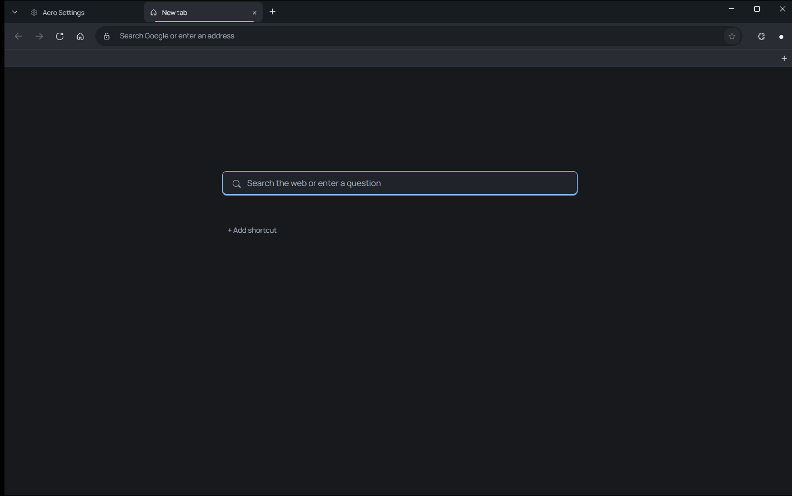
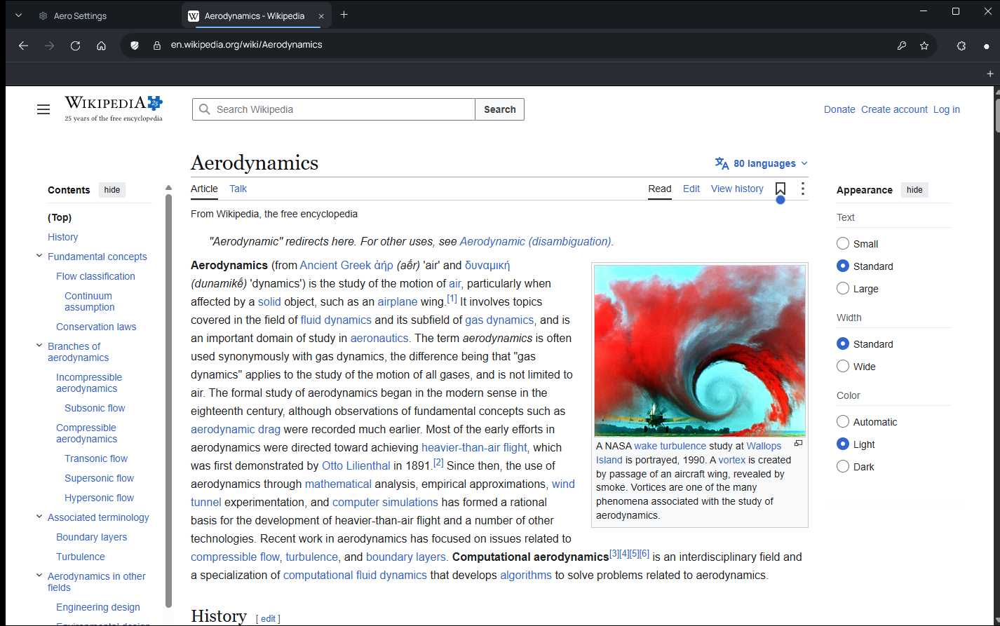
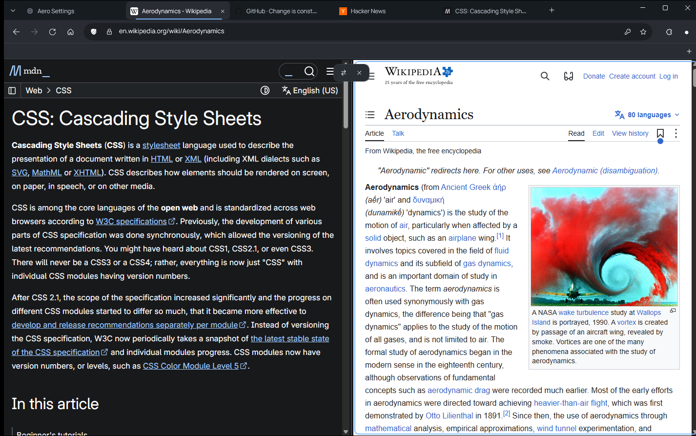
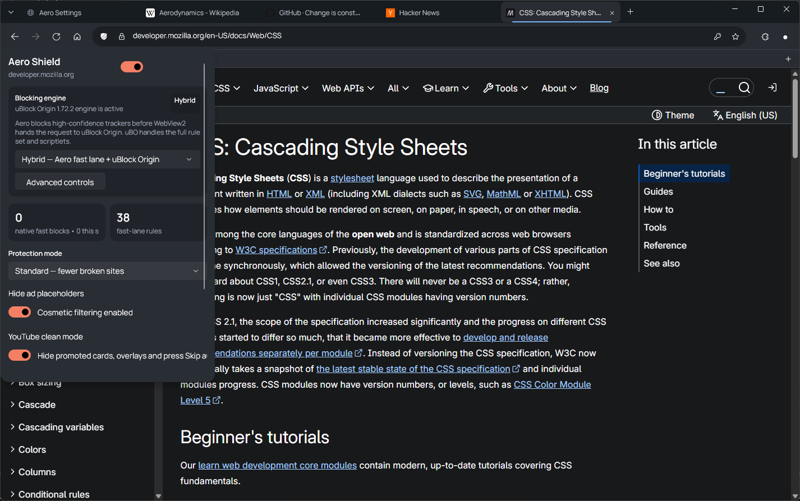
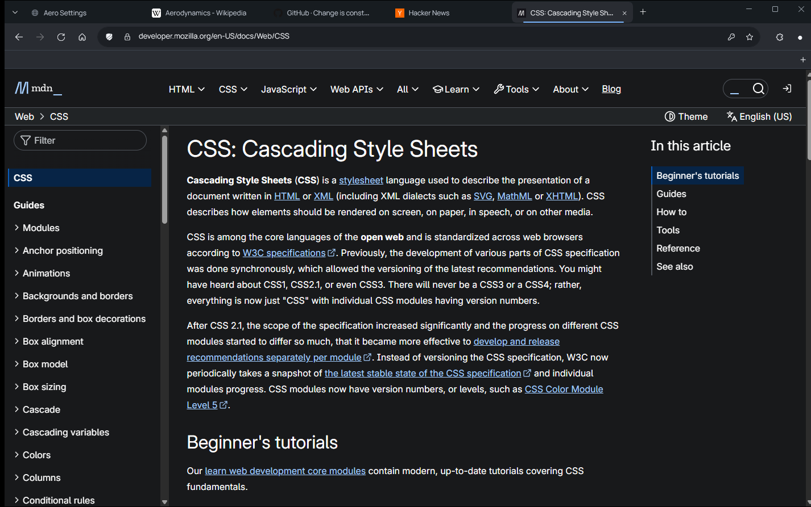
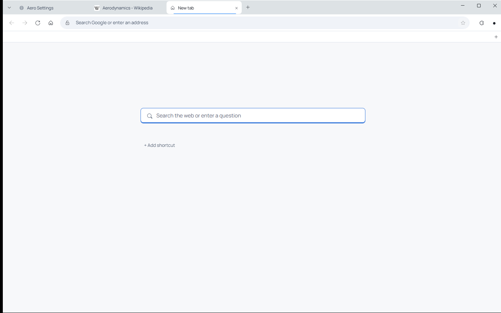

Тихий браузер, который стиллеру не по зубам
Aero для Windows 10 и 11. Без рекламы, ленты и телеметрии. Пароли лежат в Aero Vault и открываются только вашим лицом, отпечатком или PIN на этом компьютере.
Версия 0.25.2, ранний доступ. Открытый код под MPL-2.0.
Мы выдули из браузера всё лишнее

- Лента новостей
- Реклама
- Спонсорские ярлыки
- Обязательный аккаунт
- Телеметрия
- ИИ-ассистент в углу
- «Сделайте нас браузером по умолчанию»
Осталась строка поиска и ваши ярлыки.
Так сегодня крадут сохранённые пароли
- Стиллер запускается от вашего имени. Права администратора ему не нужны.
- Копирует файл Login Data, где браузер хранит пароли.
- Расшифровывает его тем же ключом Windows, что и браузер.
- Через минуту у него список всех ваших логинов и паролей.
В Aero этот файл пуст. Пароли лежат в Aero Vault, а его не открыть без вас и не на вашем компьютере.
Aero Vault открывается тремя ключами сразу
Windows Helloлицо, отпечаток или PIN
TPMключ не покидает этот компьютер
DPAPIтолько ваша учётная запись
Любые два ключа без третьего ничего не открывают. Скопированный файл хранилища — просто шум.
-
Пароль показывается не в браузере
Кнопка «Показать» запускает отдельный одноразовый процесс. Его окно скрыто от записи экрана, а сам браузер пароль так и не видит.
-
Ключ живёт одну операцию
У хранилища нет режима «открыто на 15 минут». Для каждого заполнения создаётся свой ключ и сразу уничтожается, а пароль в памяти затирается нулями.
-
Пароль подставляется только на настоящий сайт
Aero заполняет пароль только для того адреса и документа, где его сохранили. На IP-адресах, локальных сайтах и доменах-двойниках он отказывается.
И ещё шесть слоёв вокруг браузера
- Одна копия паролей. Встроенное сохранение паролей WebView2 выключено, файл Login Data пуст.
- Отдельный процесс для показа пароля. По желанию его дополнительно защищает драйвер ядра.
- Сессии сайтов не лежат на диске открыто. Ключ к ним выдаётся только Aero.exe.
- Windows Hello при запуске. Если хотите, вход на сайты тоже закрывается лицом, отпечатком или PIN.
- Проверка запуска. Подменить профиль или открыть порт отладки через настройки Windows не выйдет.
- Защита процесса. Другие программы не могут читать память Aero и запускать в нём свой код.
Что достанется стиллеру в настройках по умолчанию
| Приём стиллера | Firefox1 | Программа на Chromium2 | Chrome 127+ | Aero |
|---|---|---|---|---|
| Скопировать сохранённые пароли и расшифровать их | не защищено | не защищено | частично3 | защищено |
| Скопировать cookies и расшифровать их | не защищено | не защищено | защищено | защищено |
| Перезапустить браузер с портом отладки и выгрузить cookies | не применимо | не защищено | защищено4 | защищено |
| Прочитать память браузера или внедрить в него код | не защищено | не защищено | не защищено5 | частично |
| Действовать с правами администратора | не защищено | не защищено | не защищено | не защищено |
1 Профиль без основного пароля. 2 Браузер или программа на WebView2, которые полагаются только на DPAPI. 3 Зависит от версии Chrome. 4 С Chrome 136 для профиля по умолчанию. 5 Это публично описанный обход защиты Chrome. Сравнение по открытым данным о настройках по умолчанию; другие браузеры меняются от версии к версии.
А всё привычное на месте
Вкладки не жрут память. Фоновые засыпают, у каждой видно, сколько она тратит, а после перезапуска сессия поднимается постепенно.
Порядок на ваш вкус. Рабочие пространства, группы, разделённый экран, контейнеры и приватные окна.
Переезд за пару минут. Закладки, пароли и история из Chrome, Edge, Яндекс Браузера, Brave, Vivaldi, Opera и Firefox.
Работает сразу. Видео с защитой (Widevine, PlayReady), ключи доступа, перевод страницы в один клик, блокировщик рекламы Shield.





Синхронизация через облачную папку, которая у вас уже есть
Ни облако, ни мы не видим содержимого. Всё в папке зашифровано AES-256-GCM ключами из вашей фразы (PBKDF2-SHA256, 600 000 раундов). Сервера Aero нет, аккаунт не нужен.
Конфликтов не бывает. Каждый компьютер пишет только в свой файл и читает чужие. Закладки синхронизируются сами раз в пару минут, пароли — по запросу, с фразой и Windows Hello.
Новый компьютер подтянет всё сам. Укажите ту же папку и фразу, и хранилище вернётся. Пустой компьютер никогда не затирает остальные.
Пока не синхронизируются история, открытые вкладки и порядок закладок. Приложения для телефона нет.
Служба, которая выдаёт ключ, стартует за 60 мс, если запущена — за 1 мс, занимает 8,5 МБ и выгружается через минуту простоя.
От чего Aero пока не спасает
От кода, уже внедрённого в запущенный Aero. Как и защита Chrome, эта защита не даёт украсть файлы, но не помогает против того, что уже внутри браузера.
От чтения памяти WebView2. Пока Aero работает, cookies лежат в памяти сетевого процесса WebView2, а его могут читать другие программы пользователя.
От вирусов с правами администратора. Против них обычная программа бессильна. Необязательный драйвер пока защищает только окно с паролями.
В сборках для разработчиков. Без MSIX нет службы ключей, и хранилище cookies выключено, пока не включён Windows Hello.
Aero — ранняя версия, независимого аудита ещё не было. Не храните в нём аккаунты, потерю которых нельзя себе позволить. Нашли уязвимость? Напишите по инструкции в SECURITY.md.
Попробуйте Aero
Windows 10 и 11, 64 бита. Версия 0.25.2.